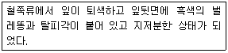
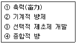

식물보호기사 (2009-08-30 기출문제)
1과목: 식물병리학
1. 배나무 붉은별무늬병균(赤星病菌)의 중간기주는?
- 사과나무
- 소나무
- 향나무
- 참나무
(정답률: 84%)

2. 고추 역병(疫病)이 많이 발생할 수 있는 환경과 가장 관계 깊은 것은?
- 이어짓기, 가뭄
- 돌려짓기, 과습
- 이어짓기, 침수
- 돌려짓기, 침수
(정답률: 87%)
3. 담배 모자이크바이러스의 전염 경로가 아닌 것은?
- 오염 토양
- 담배나방
- 담배 피우던 손
- 오염된 농구(農具)
(정답률: 62%)
4. 운동성을 가지고 있는 포자는?
- 유주자
- 분생포자
- 유성포자
- 난포자
(정답률: 70%)
5. 다수계(통일계) 벼 품종이 도열병에 이병화된 원인으로 가장 관계가 깊은 것은?
- 변이균 발생
- 토양의 산성화
- 침수와 태풍
- 매개충 대발생
(정답률: 63%)
6. 독소와 기주 특이성과의 관계를 옳게 설명한 것은?
- 모든 독소는 기주 특이성이 있다.
- 모든 독소는 기주 특이성이 없다.
- 독소와 기주 특이성과는 관계가 없다.
- 독소에 따라 기주 특이성이 있는 것도 있고 없는 것도 있다.
(정답률: 81%)
7. 벼 도열병 방제를 위해서 가스가마이신·프탈라이드 수화제를 1000배로 희석하여 뿌리고자 한다. 물 1L에 수화제를 얼마나 타면 되는가?
- 0.1g
- 1g
- 0.1kg
- 1kg
(정답률: 72%)
8. 순활물기생균으로 옳은 것은?
- 벼 도열병균
- 맥류 흰가루병균
- 고추 탄저병균
- 벼 흰잎마름병균
(정답률: 59%)
9. 식물병원균이 생성하는 특이적 독소에 해당되는 것은?
- AK-독소
- Fusaric acid
- Ophiobolins
- Tabtoxin
(정답률: 73%)
10. 코희의 원칙(Koch's postulates)에 관한 설명으로 틀린 것은?
- Robert Koch가 제안하였다.
- 4단계의 규칙으로 구성되었다.
- 모든 식물병원체에 적용할 수 있다.
- 식물병 뿐만 아니라, 동물병에도 적용될 수 있다.
(정답률: 75%)
11. 곤충에 의해서 전염되는 식물병은?
- 고추 탄저병
- 벼 흰잎마름병
- 배나무 붉은별무늬병
- 대추나무 빗자루병
(정답률: 73%)
12. 식물 병원 바이러스와 식물 병원 파이토플라스마의 차이점으로 옳은 것은?
- 바이러스는 세포벽이 있으나 파이토플라스마는 세포벽이 없다.
- 바이러스는 RNA를 함유하고 있으나 파이토플라스마는 RNA가 없다.
- 바이러스는 매개충이 옮겨 주나 파이토플라스마는 매개충에 의하여 전파되지 않는다.
- 바이러스는 테트라싸이클린(tetracycline)에 대하여 저항성이나 파이토플라스마는 감수성이다.
(정답률: 67%)
13. 하우스에 재배하는 채소에서 과습과 저온에서 많이 발생하는 병은?
- 고추 탄저병
- 딸기 잿빛곰팡이병
- 토마토 풋마름병
- 오이 덩굴쪼김병
(정답률: 82%)
14. 복숭아나무 잎오갈병의 전형적인 병징은?
- 천공
- 이상 비후
- 위조
- 도장
(정답률: 57%)
15. 종묘소독에 대한 설명으로 가장 적합한 것은?
- 전염원을 제거하는 방법이다.
- 종자의 발아율을 좋게 하는 방법이다.
- 종자를 이물질이 없도록 정선하는 방법이다.
- 농약만을 사용하는 방법이므로 화학적 방제법이다.
(정답률: 69%)
16. 유전자 증폭에 의한 식물병의 진단과 가장 관련이 있는 용어는?
- TEM
- PCR
- IEM
- RFLP
(정답률: 81%)
17. 벼 잎집무늬마름병의 방제 방법으로 옳은 것은?
- 질소 비료 과용
- 고습도 유지
- 밀식 방지
- 이병성 품종 재배
(정답률: 65%)
18. 식물체 물관에 병원균이 침입하여 증식하므로 발생하는 병은?
- 벼 도열병
- 토마토 풋마름병
- 맥류 녹병
- 사과 점무늬낙엽병
(정답률: 80%)
19. 벼 오갈병 바이러스의 핵산은?
- 단일 쇄상의 RNA(ssRNA)
- 이중 쇄상의 RNA(dsRNA)
- 단일 쇄상의 DNA(ssDNA)
- 이중 쇄상의 DNA(dsDNA)
(정답률: 69%)
20. 병징인 동시에 표징인 것은?
- 토마토의 시들음
- 뽕나무의 오갈
- 오이 잎의 흰가루
- 포도의 뿌리혹
(정답률: 60%)
2과목: 농림해충학
21. 우리나라에서 이화명나방의 년 발생기수는?
- 1~2회
- 4~5회
- 6~8회
- 9~10회
(정답률: 68%)
22. 일반적으로 우리나라에서 월동하지 못하고 매년 중국 남부로부터 비래해 오는 해충은?
- 벼멸구
- 애멸구
- 끝동매미충
- 번개매미충
(정답률: 68%)
23. 생물불류의 기본단위인 종(species)의 학명(Scientific Name) 구성요소가 아닌 것은?
- 속명
- 종명
- 명명자
- 채집자
(정답률: 75%)
24. 곤충의 방어물질에 대한 설명으로 틀린 것은?
- 곤충의 방어물질을 총칭 카이로몬이라고 한다.
- 사회성 곤충에서는 독샘에서 분비하는 방어물질들이 대부분 효소들이다.
- 곤충의 방어샘에서 동정된 화합물로는 알칼로이드, 테르페노이드, 퀴논, 페놀 등이 있다.
- 비사회성 곤충에서는 방어물질 중에 개미들의 경보페로몬과 같거나 비슷한 구조의 화합물도 있다.
(정답률: 67%)
25. 생물적 방제를 목적으로 천적을 도입하고자 한다. 천적의 조건으로 가장 거리가 먼 것은?
- 공격력이 왕성한 것
- 번식력이 왕성한 것
- 단식성 내지 과식성인 것
- 주로 해충의 수컷을 공격하는 것
(정답률: 78%)
26. 향나무하늘소의 주요 가해 부위는?
- 잎
- 줄기
- 뿌리
- 종자
(정답률: 79%)
27. 다음은 어떤 해충에 의한 피해인가?

- 응애류
- 방패벌레류
- 나무이류
- 멸구류
(정답률: 64%)
28. 해충의 발생예찰 이론에서 피해허용밀도, 요방제 밀도, 피해허용한계는 어떤 항목의 판정기준에 해당하는가?
- 발생시기의 예찰
- 발생량의 예찰
- 피해량의 예찰
- 방제여부의 예찰
(정답률: 67%)
29. 곤충의 탈피에 관여하는 호르몬 중 알라타체(corpusallatum)에서 분비되는 호르몬은?
- 탈피호르몬(Ecdysone Hormone)
- 뇌호르몬(Brain Hormone)
- 유약호르몬(Juvenile Hormone)
- 이뇨호르몬(Diuretic hormone)
(정답률: 75%)
30. 흡즙성 해충의 증식을 촉진시킬 우려가 가장 높은 비료의 종류는?
- 질소질 비료
- 인산질 비료
- 칼륨질 비료
- 마그네슘질 비료
(정답률: 64%)
31. 곤충의 기관으로 맛감각과 관계가 없는 것은?
- 윗입술
- 작은 턱수염
- 아랫입술 수염
- 큰턱
(정답률: 82%)
32. 생물적 방제의 장점에 대한 설명으로 거리가 먼 것은?
- 모든 해충에 적용되고 있다.
- 생물상이 평형을 되찾고 생태계가 안정된다.
- 효과발현이 늦지만 영구적으로 효과가 있다.
- 비용은 처음에만 필요하고 그 이후는 불필요하다.
(정답률: 69%)
33. 곤충의 외분비물질 특히 암수 상호간의 종내 통신물질을 이용한 것으로 나비목 해충의 방제에 많이 활용되고 있는 물질은?
- 집합페로몬
- 경보페로몬
- 성페로몬
- 길잡이페로몬
(정답률: 86%)
34. 곤충의 해당 분류군의 연결로 틀린 것은?
- 먼지벌레 - 딱정벌레목
- 갈색여치 - 메뚜기목
- 솔수염하늘소 - 딱정벌레목
- 알락명주잠자리 - 잠자리목
(정답률: 49%)
35. 완전변태를 하지 않는 곤충은?
- 칠성풀잠자리
- 조명나방
- 고자리파리
- 루비깍지벌레
(정답률: 50%)
36. 곤충 더듬이(antenna)의 마디 중, 수컷이 암컷의 날개 소리를 잘 듣도록 발달된 존스턴기관(Johnston's organ)이 있고, 비행 중 바람의 속도를 측정하는 감각기들이 집중되어 있는 마디는?
- 기본마디
- 자루마디
- 팔굽마디
- 채찍마디
(정답률: 73%)
37. 애멸구의 형태적 특징에 대한 설명을 틀린 것은?
- 날개는 진한 암갈색이다.
- 머리의 돌출부는 장방형에 가깝다.
- 수컷의 가운데 가슴 등면은 흑색이다.
- 암컷의 가운데 가슴 등면에는 황백색의 긴무늬가 있다.
(정답률: 50%)
38. 복숭아심식나방의 가해상태 및 피해현상으로 거리가 먼 것은?
- 복숭아, 사과, 배 등의 과실을 가해한다.
- 과실이 피해를 입으면 표면에 굴곡이 생긴다.
- 피해과의 내부는 갯솜 모양으로 막혀 있고 점액이 고여 있으며, 과심(果心)부위까지는 도달하지 않는다.
- 사과에서는 먹어 들어간 곳에 즙액이 나와 말라 흰색의 덩어리가 생기는 수가 많다.
(정답률: 73%)
39. 솔잎혹파리에 대한 설명으로 옳은 것은?
- 벌목에 속한다.
- 1년에 1회 발생한다.
- 소나무외 밤나무에도 가해한다.
- 우리나라에서 1949년에 처음 발견되었다.
(정답률: 60%)
40. 곤충의 내부형태 중 소화기계와 가장 관계가 깊은 것은?
- 존스톤씨기관
- 기문
- 알라타체
- 말피기씨관
(정답률: 71%)
3과목: 재배학원론
41. 작물의 광합성에 가장 효과적인 광은?
- 녹색광
- 황색광
- 주황색광
- 적색광
(정답률: 88%)
42. 답전윤환재배시 지력과 잡초문제를 감안할 때 최소년수로 가장 알맞은 것은?
- 2~3년
- 4~5년
- 6~7년
- 8~9년
(정답률: 76%)
43. 진정광합성량의 의미로 옳은 것은?
- 외견상 광합성량 + 호흡에 의한 소모량
- 외견상 광합성량 - 호흡에 의한 소모량
- 포화 광합성량 + 호흡에 의한 소모량
- 포화 광합성량 - 호흡에 희한 소모량
(정답률: 39%)
44. 중간식물은 어떤 일장형의 식물인가?
- 화성이 일장의 영향을 받지 않는다.
- 특정한 일장에서만 화성이 유도된다.
- 초기 장일이었다가 후기에 단일상태로 되어야 화성이 유도된다.
- 일정한 한계일장이 없고 대단히 넓은 범위의 일장에서 화성이 유도된다.
(정답률: 57%)
45. 비닐하우스에서는 흔히 고온장해가 유발되는데 내열성이 가장 큰 식물체 부위는?
- 눈(芽)
- 미성엽(未成葉)
- 완성엽(完成葉)
- 중심주(中心柱)
(정답률: 72%)
46. 작물 체내에서 전류이동(轉流移動)이 잘 이루어져 결핍될 경우 결핍증상이 오래된 잎에 먼저 나타나는 성분은?
- 질소(N)
- 철(Fe)
- 규소(Si)
- 칼슘(Ca)
(정답률: 67%)
47. 벼의 병해 중 곤충의 매개로 발생하는 병은?
- 도열병
- 잎집무늬마름병
- 흰잎마름병
- 줄무늬잎마름병
(정답률: 69%)
48. 주로 영양번식 하는 작물은?
- 옥수수
- 콩
- 감자
- 토마토
(정답률: 82%)
49. 작물의 유전변이에 대한 설명으로 옳은 것은?
- 환경변이는 다음 세대에 유전한다.
- 연속변이를 하는 형질을 질적 형질이라고 한다
- 불연속변이를하는 형질을 양적형질이라고 한다
- 꽃 색깔이 붉은 것과 흰 것으로 구별되는 것은 불연속변이이다.
(정답률: 71%)
50. 피자식물의 중복수정에서 염색체의 조성을 옳게 나타낸 것은?
- 배 n, 배유 n
- 배 n, 배유 2n
- 배 2n, 배유 2n
- 배 2n, 배유 3n
(정답률: 70%)
51. 답전윤화의 주요 효과로 틀린 것은?
- 지력증강
- 기지의 회피
- 병충해 증가
- 잡초의 감소
(정답률: 82%)
52. 품종 육성시 육종가가 변이를 직접 만드는 방법이 아닌 것은?
- 집단육종법
- 계통분리법
- 계통육종법
- 잡초의 감소
(정답률: 46%)
53. 광과 식물생육과의 관계로 연결이 틀린것은?
- 적색광 - 엽록소 형성
- 청색광 - 굴광현상
- 적외선 - 안토시안 생성
- 자외선 - 신장억제
(정답률: 52%)
54. 열해(熱害)의 원인으로 가장 거리가 먼 것은?
- 증산과다
- 철분의 침전
- 암모니아 축적
- 유기물의 과잉집적
(정답률: 59%)
55. 감자의 휴면타파 기술로 가장 적합한 것은?
- 1000 ~ 2000ppm의 MH-30 수용액에 침지하여 파종한다.
- 2ppm의 지베렐린 수용액에 침지하여 파종한다.
- 0.5 ~ 1%의 과산화수용액에 침지하여 파종한다
- 100ppm의 에스텔 수용액에 침지하여 파종한다.
(정답률: 71%)
56. 비료의 3요소 중 칼리의 흡수비율이 가장 큰 작물은?
- 콩
- 옥수수
- 고구마
- 맥류
(정답률: 58%)
57. 종자의 수명이 5년 이상인 장명종자(長命種子)로만 묶인 것은?
- 가지, 수박
- 메밀, 고추
- 벼, 완두
- 쌀보리, 목화
(정답률: 68%)
58. 벼에서 염해가 우려되는 한계농도는?
- 0.1% NaCl
- 0.3% NaCl
- 0.5% NaCl
- 0.7% NaCl
(정답률: 71%)
59. [(A×B)×B]×B 로 나타내는 육종법은?
- 다계교잡법
- 여교잡법
- 파생계통육종법
- 집단육종법
(정답률: 79%)
60. 맥류의 내동성과 연관된 형태적 특성으로 거리가 먼 것은?
- 포복성인 것이 내동성이 강하다.
- 엽색이 짙은 것이 내동성이 강하다.
- 생장점이 낮게 위치한 것이 내동성이 강하다.
- 중경(중배축)이 신장되는것이 내동성이 강하다
(정답률: 68%)
4과목: 농약학
61. 농약의 약효를 증진시키는 방법으로 가장 거리가 먼 것은?
- 알맞은 농약의 선택
- 방제적기에 농약 살포
- 적정농도, 정량살포
- 동일 농약의 지속 사용
(정답률: 84%)
62. 농약의 어류에 대한 독성 설명으로 틀린 것은?
- 어독성 시험은 주로 잉어를 사용한다.
- 어독성은 TLm(48시간)으로 표시한다.
- 알드린이나 디코폴제 등은 먹이 연쇄를 통해 어류에 축적된다.
- 일반적으로 어류는 알(卵)일 때 농약에 대한 감수성이 가장 높다.
(정답률: 70%)
63. 50% 의 비피유제(비중: 1) 100mL를 0.⑤% 액으로 희석하는데 소요되는 물의 양은 약 몇 L 인가?
- 49.95
- 99.9
- 499.5
- 999.9
(정답률: 68%)
64. 농약 저항성 해충의 가능한 저항성기작 특성에 대한 설명으로 틀린 것은?
- 약제를 살포한 곳의 기피를 위한 식별능력이 증가된다.
- 살충제의 피부투과성이 증대된다.
- 살충제의 충체 침투를 막기 위한 피부 두께가 증가한다.
- 체내에서 흡수된 살충제의 해독작용이증대된다
(정답률: 76%)
65. 식물체 내에서 베타산화(β-oxidation) 여부로 선택성을 나타내는 것은?
- 2,4-D
- 2,4-DES
- 2,4-DB
- UDPG
(정답률: 68%)
66. 다음 중 트리아진계 토양처리용 제초제는?
- 다이뮤론
- 리뉴론
- 메소트리온
- 시마진
(정답률: 60%)
67. cyclodiene계 살충제로 분제와 유제로 사용되고 있는 약제는?
- 엔도설판(endosulfan)
- 피레스린(pyrethrin)
- 메소밀(methomyl)
- 이미다클로프리드(imidacloprid)
(정답률: 55%)
68. 수화제 제형은 농약분류 중 어디에 속하는가?
- 사용목적에 따른 분류
- 유효성분 조성에 따른 분류
- 형태에 따른 분류
- 독성에 따른 분류
(정답률: 70%)
69. 다음 중 입제의 제조법이 아닌 것은?
- 압출조립법
- 흡착법
- 피막법
- 파쇄법
(정답률: 69%)
70. 구리제 살균제에 대한 설명으로 옳은 것은?
- 직접 살균제로서 유리된 구리 이온이 균사의 생육을 억제한다.
- 장기간 보관하여 사용이 가능하다.
- 벼과 및 핵과류작물에 약해를 나타내지 않는다
- 석회황합제, 기계유유제 등 알칼리성 농약과 혼용할 수 없다.
(정답률: 58%)
71. 훈증제가 갖추어야 할 조건이 아닌 것은?
- 휘발성이 커야 한다.
- 인화성이 커야 한다.
- 침투성이 커야 한다.
- 농도가 균일하게 확산되어야 한다.
(정답률: 66%)
72. 베노밀 수화제는 다음 중 어느 것에 해당하는가?
- 살충제
- 항생제
- 유기인제
- 침투성 살균제
(정답률: 53%)
73. 분제(粉劑)의 물리적 성질인 토분성에 대한 설명으로 옳은 것은?
- 분제를 살포하였을 때 광범위하게 그리고 균일하게 흩어지는 성질을 말한다.
- 살분시 분제의 입자가 풍압에 의하여 목적 하는 장소까지 날아가는 성질을 말한다.
- 살분시 분제의 입자가 살분기의 분출구로 잘 미끄러져 가는 성질을 말한다.
- 분제농약의 저장시 주성분의 분해 및 응집 등 물리적 변화가 일어나지 않은 성질을 말한다.
(정답률: 72%)
74. 다음 중 살비제(살응애제)의 작용점 및 작용기작과 같은 양상을 나타내는 농약은?
- 살균제
- 제초제
- 살선충제
- 살충제
(정답률: 69%)
75. 일반적인 제초제와는 달리 광엽작물에 안전하고 주로 화본과 잡초에 매우 강한 살초작용을 나타내며 식물체내 지질합성효소인 ACCase를 저해하는 밭제초제 부류와 그 대표적 약제가 알맞게 짝지어진 것은?
- Phenoxy계 - 엠시피비(MCPB)
- Acetanilide계 - 부타(butachlor)
- Phosphono amino acid계 - 근사미(glyphosate)
- Aryloxyphenoxypropionic계 - 플루아지호프피 부틸(fluazifop-P-butyl)
(정답률: 39%)
76. 안전농산물 생산을 위한 농약개발 방법으로 옳지 않은 것은?
- 고활성, 저투입 농약의 개발
- Xylene 이 주 용제로 사용되는 농약 개발
- 종자분의제의 개발
- 병해충 동시방제용 혼합제 개발
(정답률: 77%)
77. 동일 분자 내에 친수성기와 소수성기를 가진 화합물은?
- 안정제
- 증량제
- 용제
- 계면활성제
(정답률: 74%)
78. 다음 중 수화제에 주로 사용되는 증량제는?
- toluene
- sulfamate
- bentonite
- methanol
(정답률: 74%)
79. Phenoxy계 제초제의 일반적인 특징에 대한 설명으로 틀린 것은?
- 옥신 작용을 지니고 있다.
- 식물의 기본적인 생리활성의 교란현상에 의하여 제초활성을 나타낸다.
- 약량 과다 처리 시 기형뿌리발생, 분얼억제 등이 나타날 수 있다.
- 인축 및 어래류에 대한 독성이 높다.
(정답률: 73%)
80. 엔도설판(endosulfan)은 어느 계통의 농약인가?
- 유기인계
- 카바메이트계
- 유기염소계
- 피레스로이드계
(정답률: 47%)
5과목: 잡초방제학
81. 괴경과 종자로 번식하는 다년생 잡초는?
- 올미
- 씀바귀
- 서양민들레
- 알방동사니
(정답률: 71%)
82. 논에 발생하는 다년생잡초로만 묶인 것은?
- 벗풀, 가래, 너도방동사니, 쇠뜨기
- 가래, 너도방동사니, 쇠뜨기, 올방개
- 올미, 명아주, 올방개, 벗풀
- 올방개, 벗풀, 가래, 너도방동사니
(정답률: 63%)
83. 작물이 생육초기에는 잡초와의 경합에 매우 민감 하여 제초를 하지 않을 경우 작물에 현저한 수량 감소를 초래하는 기간을 경합한계기간이라고 한다. 작물 생육기간이 100일이면 일반적인 경합한계기간으로 가장 적합한 것은?
- 파종 및 이식 후부터 10~20일내
- 파종 및 이식 후부터 20~30일내
- 파종 및 이식 후부터 50~60일내
- 파종 및 이식 후부터 60~70일내
(정답률: 80%)
84. 작물과 잡초와의 경합해(競合害)로 나타나는 작물의 증상은?
- 분열수가 많아진다.
- 작물의 엽면적이 커진다.
- 건물중(乾物重)은 많아진다.
- 광합성량(光合成量)이 줄어든다.
(정답률: 68%)
85. 계면활성제의 특성으로 옳은 것은?
- 친수성의 성질만 갖고 있다.
- 친유성의 성질만 갖고 있다.
- 표면장력을 크게 하는 물질이다.
- 표면활성제라고도 하며, 비누는 그 대표적인 예이다.
(정답률: 68%)
86. 제초제 1000ppm은 몇 %인가?
- 0.01%
- 0.1%
- 1%
- 10%
(정답률: 69%)
87. 잡초의 예방적 방제법이라고 할 수 없는 것은?
- 손제초
- 농기계의 청결
- 재배관리의 합리화
- 오염된 작물 종자의 수확관리
(정답률: 68%)
88. 다음 중 작물 파종 후 잡초경합한계기간이 가장 긴 작물은?
- 양파
- 콩
- 옥수수
- 들깨
(정답률: 59%)
89. 잡초 종자의 특징에 대한 연결로 틀린 것은?
- 야생벼 - 탈립성
- 박주가리, 망초 - 낙하산 모양의 깃털
- 미국가막사리, 도꼬마리 - 낚시모양의 돌기
- 메귀리, 도깨비바늘 - 표면끈끈이
(정답률: 81%)
90. 다음 다년생 잡초 중 지하경의 토양 내 형성부위가 일반 재배조건에서 가장 깊은 잡초는?
- 올미
- 너도방동사니
- 벗풀
- 가래
(정답률: 44%)
91. 설포닐우레아(sulfonylurea)계 제초제의 작용 기구는?
- 광합성의 저해
- 호흡작용의 저해
- 지질 생합성의 저해
- 아미노산 생합성의 저해
(정답률: 69%)
92. 잡초가 발아하여 지표면 위로 출현하는 과정에 관여하는 요인과 가장 관련이 적은 것은?
- 토양심도
- 토양수분
- 토양온도
- 토양구조
(정답률: 58%)
93. 제초제의 휘산과 광분해를 막는데 가장 효과적인 처리 방법은?
- 토양표면처리
- 경엽처리
- 토양혼화처리
- 토양대상처리
(정답률: 68%)
94. 다음 잡초방제방법의 발달 순서로 옳은 것은?

- ① → ② → ③ → ④
- ① → ② → ④ → ③
- ① → ③ → ② → ④
- ② → ① → ③ → ④
(정답률: 83%)
95. 잡초와의 경합력이 가장 큰 재배법은?
- 손이앙 재배
- 어린 모 기계이앙 재배
- 직파재배
- 무경운 재배
(정답률: 54%)
96. 잡초종자의 발아 습성이라 볼 수 없는 것은?
- 광전환성
- 발아주기성
- 발아의 계절 및 기회성
- 발아의 준동시성 및 연속성
(정답률: 54%)
97. 전 세계적으로 문제 잡초가 가장 많이 속한 식물의 과(科)로 옳은 것은?
- 화본과, 석죽과
- 화본과, 국화과
- 십자화과, 국화과
- 국화과, 석죽과
(정답률: 82%)
98. 일년생 잡초로만 바르게 묶인 것은?
- 개구리밥, 보풀
- 벗풀, 매자기
- 나도겨풀, 올방개
- 여뀌, 밭뚝외풀
(정답률: 51%)
99. 우수한 제초제가 구비해야 할 조건으로 틀린 것은?
- 제초효과가 우수해야 한다.
- 작물에 대한 안전성이 높아야 한다.
- 값이 싸고 사용하기 편해야 한다.
- 토양 잔류기간이 길어야 한다.
(정답률: 80%)
100. 잡초의 식물학적 분류에서 단자엽 식물의 특성에 해당하는?
- 2매 자엽
- 개방유관속
- 위쪽에 생장점 위치
- 섬유근계
(정답률: 62%)